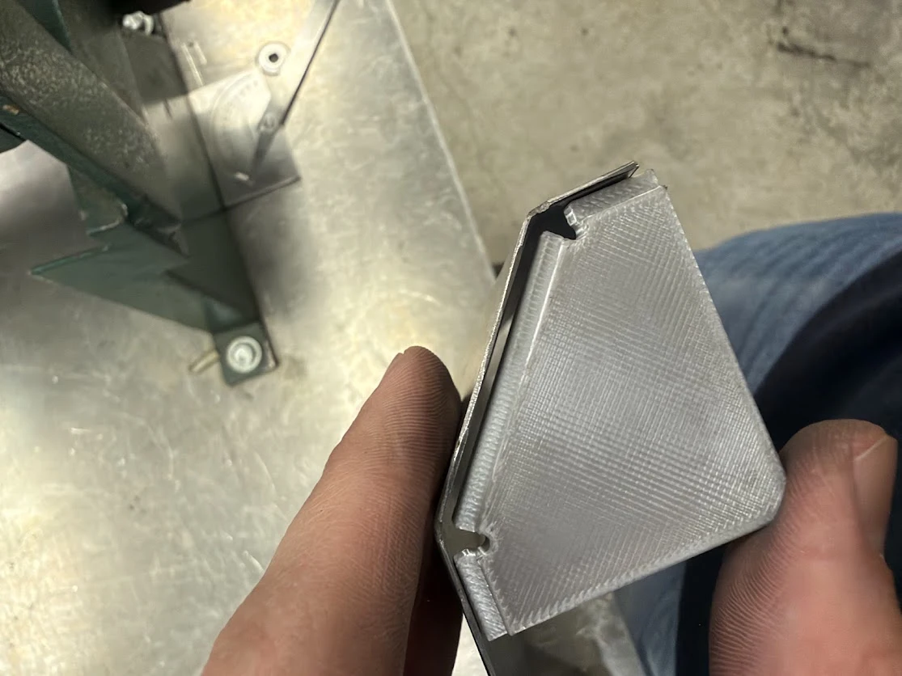
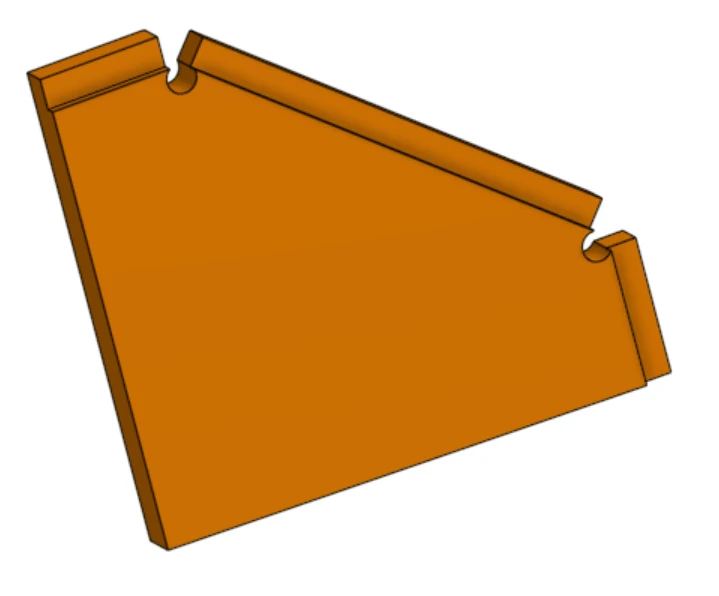
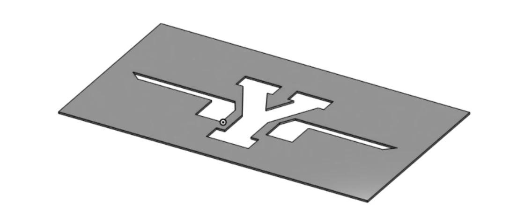
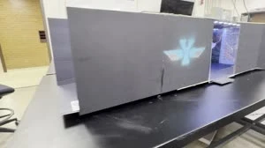
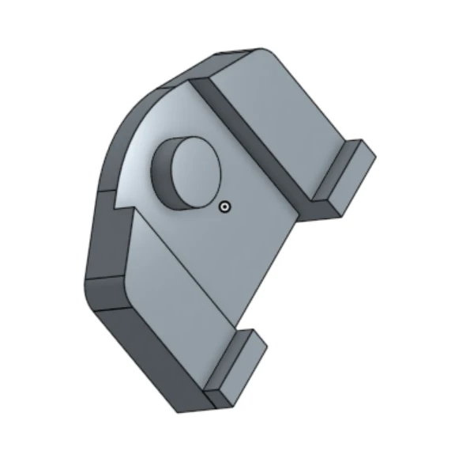
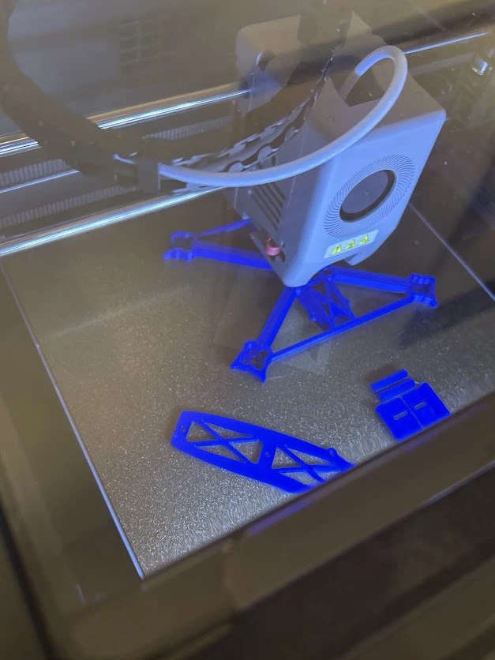

01 / Latest 3D print · Shop tooling
Angled bend gauge
I designed and 3D printed this gauge to line up bends on a manual press brake and check that the end caps sit at the intended inset.


Portfolio / BYU Manufacturing Engineering
I’m a manufacturing engineering student at BYU. I design parts in CAD, make them in the shop or on a 3D printer, and use what I learn from the build to improve the next version.
01 / Latest 3D print · Shop tooling
I designed and 3D printed this gauge to line up bends on a manual press brake and check that the end caps sit at the intended inset.


02 / BYU Manufacturing Engineering · In fabrication
I designed this 20-gauge mild steel toolbox for a BYU manufacturing engineering class and am currently fabricating it. Fitting the piano hinge showed how small alignment changes affect the way the lid closes.


03 / BYU Aeronautics outreach
I modeled and 3D printed a four-section honeycomb to straighten airflow in a small wind tunnel for school outreach demonstrations.


04 / Client project
I designed and 3D printed a beehive-shaped spinning toy for a client to use at a book convention.


05 / FPV · Additive manufacturing
I built this palm-sized FPV quad and made custom parts for it in PLA and TPU.

06 / From sketch to batch print
I designed a clip that keeps a pencil within reach on a music stand, then printed a batch of the finished design.
07 / Aircraft builds
A selection of FPV quads I’ve built, with a closer look at the electronics inside a fixed-wing aircraft.


08 / BYU Aeronautics outreach
I made a stencil for BYU Aeronautics outreach and used it to spray-paint the winged Y.


09 / Mechanical assembly
The assembled clock pairs machined pillars with a brass schnauzer pendulum. The drawings show the dimensions and CAD views for both parts.
10 / CAD
I modeled a replacement button for a car key.

11 / Additive manufacturing
I used 3D printing to prototype an experimental drone frame.

12 / Early concept
I measured the holder leg and friction pad, then sketched and printed a first prototype for a household plate holder.

I currently print on an Elegoo Centauri Carbon 2. Earlier setups included an Ender 3 and a Flashforge Adventurer 5M Pro.


I helped develop both software projects with AI assistance.